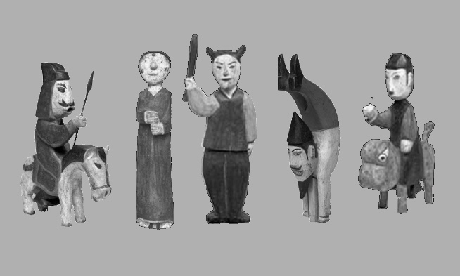

Floating, 단채널 영상, 2’18”, 2020

* 꼭두 : 나무 만들어진 사람의 형상으로 이 생과 사후세계를 매개하는 오브제이다. 조선시대 상여는 꽃상여와 꼭두상여로 나뉜다. 꼭두상여에 가득 붙은 꼭두들은 망자를 수발들고 위로하는 역할로 그 형상은 당시 사람들의 계급에 따른 다양한 직업을 보여준다.
나는 버려진 꼭두를 발굴하고 수집하던 할머니의 영향으로 꼭두와 함께 살고 성장했다

버리는인형, 92.0x32.0x18.8cm, 에어팩,의료용 실리콘호스, 케이블 타이, 투명PVC, 2020
(좌측 상단) Remedial exercise_acupressure, 단채널 영상, 00’27”, 2019
(우층 상단) Remedial exercise_shoulder muscle, 단채널 영상, 00’31”, 2019
(좌측 하단) Remedial exercise_poignet, 단채널 영상, 2’22”, 2019
(우측 하단) Remedial exercise_drop- the- hankerchief, 단채널 영상, 13’19”, 2019
Remedial exercise
나는2년전 운동선수들의 재활치료를 담당하는 움직임 전문가를 우연히 만났다. 그는 내게 말과 간단한 동작으로 재활운동을 설명했다. 동작들은 정확한 절차가 있는 저강도 움직임의 나열이며 반복적인 미동으로 구성된 것이었는데 그 반복 움직임은 아무런 텐션이 없어서 쓸모나 목적이 없어 보였다. 그런 움직임이 훼손된 몸을 변화시킨다는 것은 내가 생각하던 퍼포먼스와 연결되어 많은 상상을 일으켰다. 움직임 전문가가 해외 출장을 떠나 이 동작에 대해 더 알아볼 길이 없어지자 나는 구체적인 정보가 비어있는 부분을 상상력으로 채우며 도구를 제작하고 근육의 반복 움직임으로 코리어그라프를 만들었다.